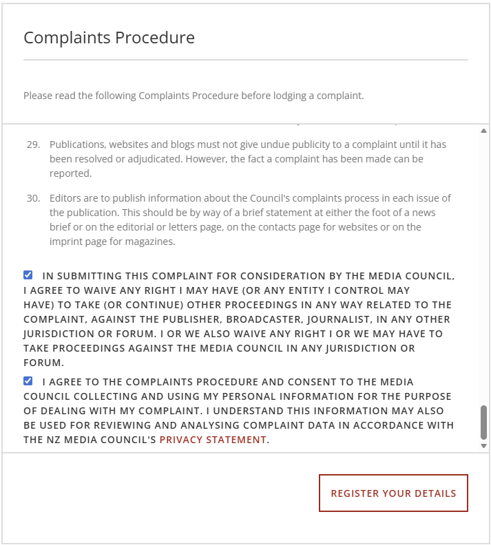
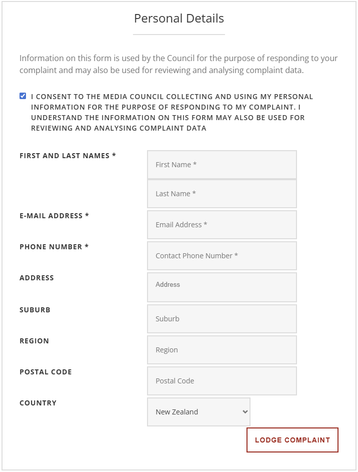
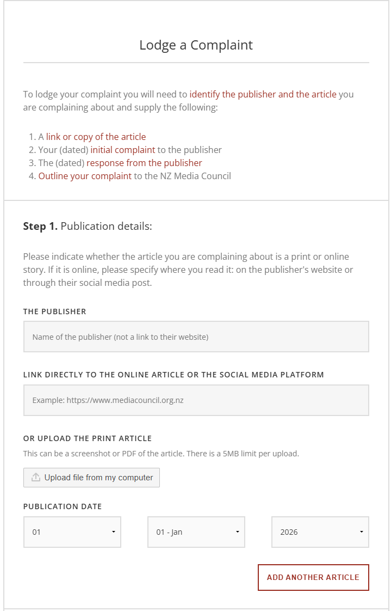
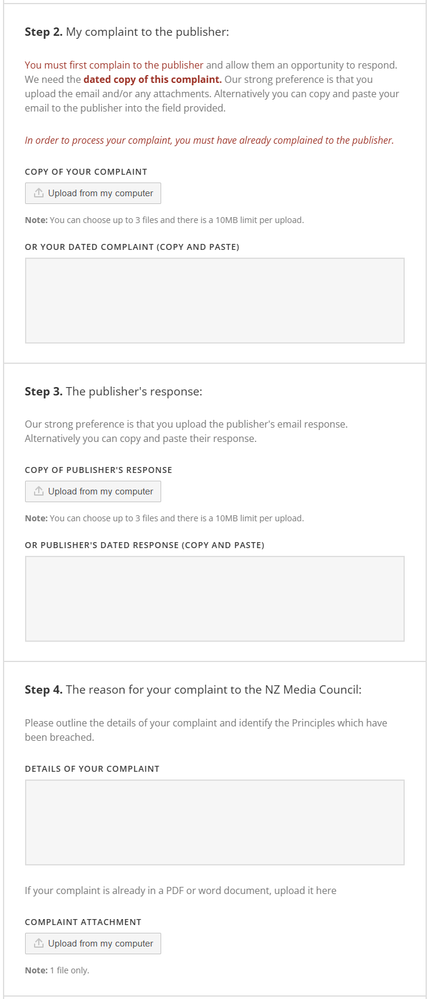
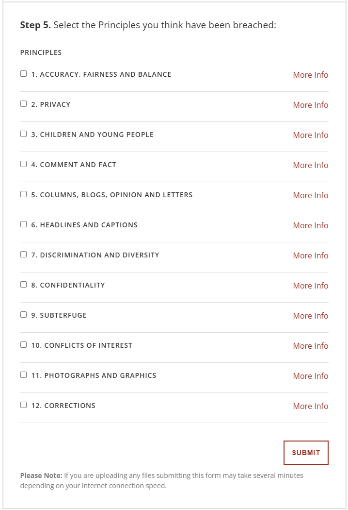

How to Make a Complaint to the NZ Media Council
The NZ Media Council is an independent body that handles complaints about print and online news publications. Follow the steps below to lodge your complaint correctly.
Have these ready before you start:
- A link or copy of the article you are complaining about
- Your dated initial complaint sent to the publisher
- The dated response from the publisher
- An outline of your complaint to the NZ Media Council
The Complaint Form — Step by Step
Part 1 — Complaints Procedure Agreement
Read the Complaints Procedure in full, then tick both declarations:
- Waiver of proceedings — You waive any right to take proceedings against the publisher, broadcaster, or journalist in any other jurisdiction or forum, and any right to take proceedings against the Media Council itself.
- Privacy consent — You consent to the Media Council collecting and using your personal information to deal with your complaint and for reviewing complaint data.
Click Register Your Details to continue.

Part 2 — Personal Details
Fill in your contact information. Required fields are marked with *:
- First and Last Name *
- E-mail Address *
- Phone Number *
- Address, Suburb, Region, Postal Code (optional)
- Country (defaults to New Zealand)
Click Lodge Complaint to continue.

Step 1 — Publication Details
Identify the article you are complaining about:
- The Publisher — Name of the publisher (not a website link)
- Link to the article — Direct URL to the online article or social media post
- Or upload the print article — Screenshot or PDF, 5MB limit
- Publication Date — Day, month, and year the article was published
You can add more than one article using "Add Another Article."

Steps 2–4 — Your Complaint, Publisher's Response & Reason
Step 2 — Your complaint to the publisher: Upload your complaint email (up to 3 files, 10MB each) or paste the text. It must be dated. The Council strongly prefers file uploads.
Step 3 — The publisher's response: Upload or paste the publisher's dated response (up to 3 files, 10MB each).
Step 4 — Reason for your complaint: Outline the details of your complaint and identify which Principles have been breached. You can also upload a PDF or Word document (1 file only).

Step 5 — Select the Principles Breached
Tick one or more Principles you believe the article has breached:
- Accuracy, Fairness and Balance
- Privacy
- Children and Young People
- Comment and Fact
- Columns, Blogs, Opinion and Letters
- Headlines and Captions
- Discrimination and Diversity
- Confidentiality
- Subterfuge
- Conflicts of Interest
- Photographs and Graphics
- Corrections
Click Submit to lodge your complaint.
If uploading files, the form may take several minutes to submit depending on your internet connection speed.
